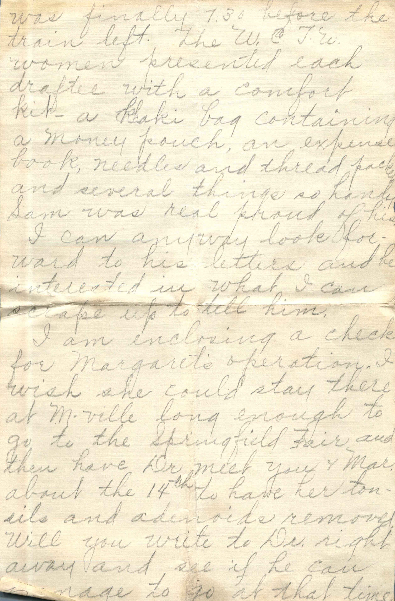
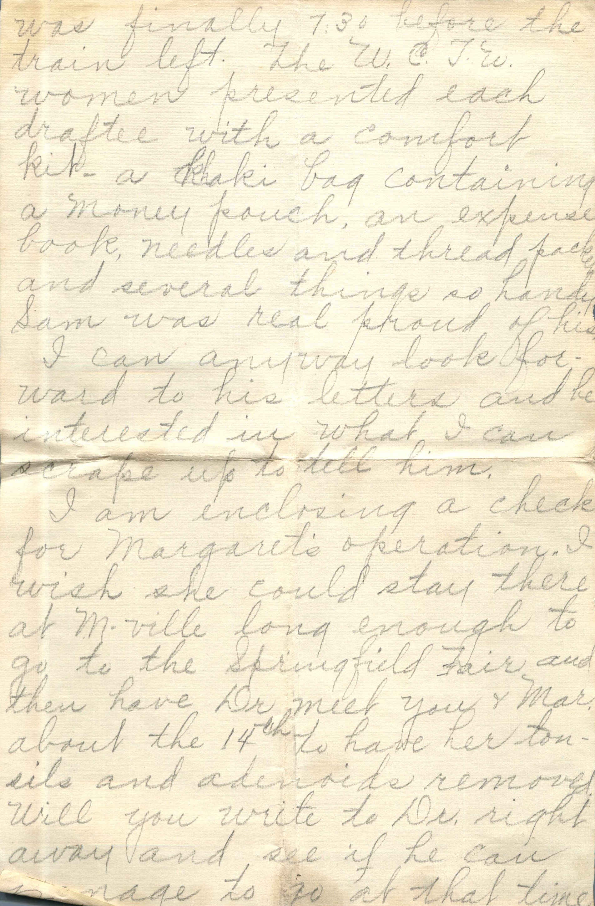

From: Ruby Chandler, To: Elijah H. Chandler and Family
 

From: Ruby Chandler, To: Elijah H. Chandler and Family Mailed From: Morrisonville, Illinois on August 2, 1918
Mrs. E.H. Chandler Pearl, Ill
Mrs. L.E. Gowin Morrisonville, Ill
Friday Evening Aug 2, 1918 Dearest Folks, Arrived this afternoon at 3 o'clock. Bess and Mae got here at 6:30. We should have gotten here at 8:30 am but the C&A was late, about an hour, and the Frisco had changed time of departure from St. L at 2 pm instead of 2:15 so we missed it by 10 minutes. So we didn't get out of St. L until 8:30 pm. We ate lunch and as we started to Granite on the McKinley car Bill got on at the same time. He got a short furlough from Paris Island SC. Sam had such a good visit with him. Bill seems so much more talkative and jolly. We were over there until 6:30 pm but the girls were in St. L shopping so we just did get to see them between the time they got there till the next car. We had had dinner in St. L and by the time we got back and ate supper we just had time to get our train. A young woman and her baby happened to be on the same pullman and had been visiting at the Legits at Waterford, Ohio where Sam and I visited. When I was talking to her she mentioned having been to Ohio and I told her my husband and I had been there too before we went to visit at Ill and she said "I'll bet you are Mrs. Sam Mulholland" and you can imagine how surprised I was. She was coming to Eldorado, Kas. (Tues) I didn't get this mailed when my intentions were so good too to write immediately. It has been murderously hot here. Sunday it was 106 degrees at 2 pm and it was almost unbearably at nights until last night. It was pretty tough to see him leaving and it will still be hard to get along without him. But I am hoping he gets to stay at Ft. Riley so he wont be so far away. The train was supposed to leave at 6 am yesterday but it was finally 7:30 before the train left. The W.C.T.W. women presented each draftee with a comfort kit - a khaki bag containing a money pouch, an expense book, needles and thread packets and several things so handy. Sam was real proud of his. I can anyway look forward to his letters and be interested in what I can scrape up to tell him. I am enclosing a check for Margaret's operation. I wish she could stay there at M-Ville long enough to go to the Springfield Fair and then have Dr. meet you and Margaret about the 14th to have her tonsils and adenoids removed. Will you write to Dr. right away and see if he can manage to go at that time. Maybe Opal will loan Margaret an extra gown or two for hospital use and I don't know what inconvenience there could be for Mae described Virginia's case so well I know there'll be very little, if any, extra expense. Lucerne can manage the housekeeping while you are in Granite and Maybe Warren can take you and Margaret to the hospital in his car. Maybe its a good plan to have Margaret come to Granite and be there when you and Dr. go down so you all could go right out to the hospital first thing and you'd have no responsibilities regarding the cars or locating the hospital. I'll surely be relieved for her to start into school without that hinderance to her speech and breathing. School begins here the 9th. I'm sure Papa can bring the girls to KC and put them on their train for Wichita. Will try to have all arrangements made for them so if they don't get here until few days before the 9th it will be OK. I guess Papa can have their passes by that time. We're anxious to hear of Martin, so let us know as soon as you hear. We have a little ironing to do before we go to Mae's so we have to get busy. last but not least, we sure did enjoy the buns, and we were glad too to get the yeast since each of us forgot it. Thanks for sending so quickly the things we over looked. Write soon and let us know plans. Lots of Love, Ruby